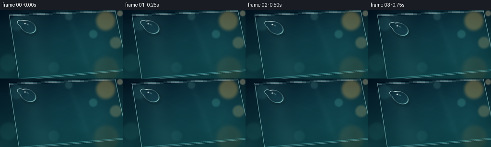
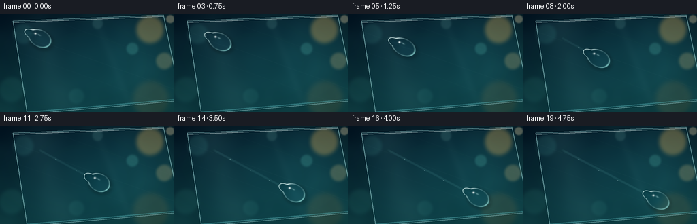
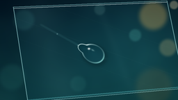

CODING AGENTS AS PIXEL WORLD MODELS
traex/GPT-5.6-Sol · phygen_037
点击播放 · 原生 RGB 像素
逐轮保存的候选
回放视频、检查图与代码变化。
每份候选均可单独播放。实际图片检查记录在下方工具轨迹中。
候选 01播放与检查图
点击播放 · 原生 RGB 像素


展开代码变化
--- 上一保存版本
+++ 本次保存版本
@@ -0,0 +1,235 @@
+from pathlib import Path
+import numpy as np
+from PIL import Image, ImageDraw, ImageFilter
+from scipy.ndimage import gaussian_filter, map_coordinates
+import artifact_io
+
+# Deterministic, supersampled procedural macro scene.
+W, H, N = 256, 144, 20
+S = 3
+w, h = W * S, H * S
+rng = np.random.default_rng(3701)
+yy, xx = np.mgrid[0:h, 0:w].astype(np.float32)
+X, Y = xx / S, yy / S
+xn, yn = X / W, Y / H
+
+
+def smoothstep(a, b, z):
+ q = np.clip((z - a) / (b - a), 0.0, 1.0)
+ return q * q * (3.0 - 2.0 * q)
+
+
+def composite(dst, src, alpha):
+ if np.ndim(alpha) == 2:
+ alpha = alpha[..., None]
+ return dst * (1.0 - alpha) + src * alpha
+
+# Defocused environment: cool, dark macro background with warm bokeh.
+top = np.array([5.0, 22.0, 31.0])
+bottom = np.array([12.0, 55.0, 58.0])
+base = top + (bottom - top) * yn[..., None]
+# Cyan ambient light from the right and deep vignette.
+ambient = np.exp(-(((xn - .82) / .43) ** 2 + ((yn - .40) / .72) ** 2))
+base += ambient[..., None] * np.array([7.0, 24.0, 25.0])
+base += (1.0 - xn)[..., None] * np.array([1.0, 5.0, 9.0])
+
+# Large blurred botanical silhouettes behind the glass.
+plants = Image.new("L", (w, h), 0)
+pd = ImageDraw.Draw(plants)
+for k in range(13):
+ x0 = int((8 + k * 23 + rng.uniform(-10, 10)) * S)
+ y0 = int((150 + rng.uniform(-8, 16)) * S)
+ x1 = int((x0 / S + rng.uniform(-22, 26)) * S)
+ y1 = int(rng.uniform(25, 105) * S)
+ pd.line((x0, y0, x1, y1), fill=int(rng.integers(55, 110)), width=int(rng.uniform(3, 8) * S))
+plants = np.asarray(plants.filter(ImageFilter.GaussianBlur(7 * S)), dtype=np.float32) / 255.0
+base = composite(base, np.array([3.0, 30.0, 31.0]), plants * .40)
+
+# Out-of-focus light circles, deliberately behind the glass plane.
+bokeh = [
+ (220, 23, 23, (255, 194, 94), .31),
+ (241, 69, 14, (255, 218, 137), .22),
+ (194, 51, 10, (105, 220, 203), .18),
+ (34, 29, 17, (86, 179, 174), .13),
+ (17, 111, 21, (73, 184, 166), .11),
+ (221, 125, 30, (234, 159, 65), .11),
+ (143, 14, 9, (159, 227, 211), .11),
+ (112, 121, 13, (78, 177, 162), .10),
+ (250, 7, 7, (255, 237, 189), .34),
+]
+for cx, cy, rad, col, strength in bokeh:
+ rr = np.sqrt((X - cx) ** 2 + (Y - cy) ** 2) / rad
+ a = strength * (1.0 - smoothstep(.55, 1.12, rr))
+ # Faint bright rim characteristic of lens bokeh.
+ a += strength * .12 * np.exp(-((rr - .76) / .13) ** 2)
+ base = composite(base, np.asarray(col, dtype=np.float32), a)
+
+# Smooth low-frequency photographic texture, never enough to look synthetic.
+noise = rng.normal(0, 1, (h, w)).astype(np.float32)
+noise = gaussian_filter(noise, 11 * S)
+noise /= max(noise.std(), 1e-5)
+base += noise[..., None] * np.array([1.0, 1.7, 1.5])
+base = np.clip(base, 0, 255)
+
+# The glass pane is an unmistakable, slightly tilted quadrilateral.
+pane_im = Image.new("L", (w, h), 0)
+pane_poly = [(19*S, 10*S), (240*S, 1*S), (266*S, 127*S), (40*S, 147*S)]
+ImageDraw.Draw(pane_im).polygon(pane_poly, fill=255)
+pane_mask = np.asarray(pane_im, dtype=np.float32) / 255.0
+# Very small optical shift through the pane.
+shifted = np.empty_like(base)
+for c in range(3):
+ shifted[..., c] = map_coordinates(base[..., c], [yy + 1.15*S, xx - .65*S], order=1, mode='nearest')
+pane = base * .52 + shifted * .48
+pane += np.array([1.5, 7.0, 8.5])
+# Broad grazing reflection and a narrower reflected strip.
+refl = np.exp(-((xn - (.20 + .16 * yn)) / .105) ** 2) * .058
+refl2 = np.exp(-((xn - (.54 + .22 * yn)) / .025) ** 2) * .025
+pane = composite(pane, np.array([158., 220., 221.]), (refl + refl2) * pane_mask)
+scene = composite(base, pane, pane_mask * .82)
+
+# Pane bevel and faint edge glow.
+edge_layer = Image.new("RGBA", (w, h), (0, 0, 0, 0))
+ed = ImageDraw.Draw(edge_layer)
+ed.line(pane_poly + [pane_poly[0]], fill=(178, 239, 239, 160), width=1*S)
+ed.line([(20*S, 12*S), (240*S, 3*S)], fill=(235, 255, 252, 175), width=1*S)
+ed.line([(40*S, 144*S), (261*S, 125*S)], fill=(93, 190, 195, 105), width=2*S)
+edge_arr = np.asarray(edge_layer, dtype=np.float32)
+scene = composite(scene, edge_arr[..., :3], edge_arr[..., 3] / 255.0)
+# Sparse, nearly invisible polishing lines on the smooth surface.
+for off, strength in [(0, .020), (28, .012), (-37, .014)]:
+ line = np.exp(-((Y - (.36*X + 18 + off)) / 0.42) ** 2) * strength * pane_mask
+ scene = composite(scene, np.array([192., 234., 232.]), line)
+
+pane_static = np.clip(scene, 0, 255).astype(np.float32)
+frames = []
+
+# Main droplet trajectory in final-pixel coordinates.
+start = np.array([57.0, 34.5])
+end = np.array([197.0, 108.0])
+travel_vec = end - start
+travel_len2 = float(np.dot(travel_vec, travel_vec))
+angle = np.arctan2(travel_vec[1], travel_vec[0])
+ca, sa = np.cos(angle), np.sin(angle)
+
+for fi in range(N):
+ t = fi / (N - 1)
+ # Sine easing gives a graceful settle at each end but visible travel throughout.
+ p = .5 - .5 * np.cos(np.pi * t)
+ cx = start[0] + travel_vec[0] * p
+ cy = start[1] + travel_vec[1] * p + 2.0 * np.sin(np.pi * p)
+ img = pane_static.copy()
+
+ # A narrow wet trace appears only behind the moving bead.
+ apx, apy = start
+ bvx, bvy = cx - apx, cy - apy
+ denom = max(bvx*bvx + bvy*bvy, 1.0)
+ proj = ((X-apx)*bvx + (Y-apy)*bvy) / denom
+ closest_x = apx + np.clip(proj, 0, 1) * bvx
+ closest_y = apy + np.clip(proj, 0, 1) * bvy
+ dist = np.sqrt((X-closest_x)**2 + (Y-closest_y)**2)
+ behind = smoothstep(-.01, .035, proj) * (1.0-smoothstep(.77, .97, proj))
+ # Soft central streak and two microscopic glistening wet edges.
+ trail = np.exp(-(dist/1.05)**2) * behind * (.055 + .065*p)
+ trail_edge = np.exp(-((dist-1.22)/.34)**2) * behind * (.022 + .045*p)
+ img = composite(img, np.array([121., 205., 204.]), trail + trail_edge)
+
+ # Tiny residual beads remain in the wake, increasing physical readability.
+ for rp, rsize in [(.18, 1.10), (.39, .78), (.59, .62)]:
+ if p > rp + .07:
+ rx = start[0] + travel_vec[0]*rp
+ ry = start[1] + travel_vec[1]*rp + 2.0*np.sin(np.pi*rp)
+ rr = np.sqrt((X-rx)**2 + (Y-ry)**2)
+ bead = np.exp(-(rr/max(rsize, .3))**4) * .25
+ img = composite(img, np.array([180., 241., 239.]), bead)
+ core = np.exp(-(((X-rx+.25)/.30)**2 + ((Y-ry+.3)/.30)**2))*.56
+ img = composite(img, np.array([248.,255.,253.]), core)
+
+ # Rotated local droplet coordinates: +u is the direction of travel.
+ dx, dy = X-cx, Y-cy
+ u = dx*ca + dy*sa
+ v = -dx*sa + dy*ca
+ wobble = np.sin(2*np.pi*(p+.08))
+ a = 18.3 + 1.05*wobble
+ b = 13.7 - .50*wobble
+ # Main lenticular body plus a subtle receding tail, merged as metaballs.
+ asym_b = b * (0.90 + .10*np.clip((u+a)/(2*a), 0, 1))
+ q_main = ((u-1.1)/a)**2 + (v/asym_b)**2
+ q_tail = ((u+13.7)/(10.1+.35*wobble))**2 + (v/(6.2-.15*wobble))**2
+ # Smooth-min makes the union organic rather than two circles.
+ k = 8.0
+ q = -np.log(np.exp(-k*q_main) + np.exp(-k*q_tail)) / k
+ rnorm = np.sqrt(np.maximum(q, 0))
+ mask = 1.0 - smoothstep(.965, 1.025, rnorm)
+
+ # Contact shadow below the bead anchors it to the pane.
+ sdx, sdy = X-(cx+1.8), Y-(cy+2.6)
+ su = sdx*ca+sdy*sa
+ sv = -sdx*sa+sdy*ca
+ sq = ((su-1.1)/(a+1.0))**2 + (sv/(b+1.0))**2
+ shadow = np.exp(-((np.sqrt(sq)-.87)/.22)**2) * .15
+ shadow *= (1.0-mask) * pane_mask
+ img *= (1.0-shadow[..., None])
+
+ # Lens refraction: the background is magnified and shifted inside the bead.
+ radial = np.clip(1.0-rnorm, 0, 1)
+ source_x = cx + dx*.61 - 2.35*ca*radial + .6*sa*radial
+ source_y = cy + dy*.61 - 2.35*sa*radial - .6*ca*radial
+ coords = [source_y*S, source_x*S]
+ refr = np.empty_like(img)
+ # Tiny chromatic separation at the perimeter reads as real glass/water optics.
+ refr[..., 0] = map_coordinates(pane_static[..., 0], [coords[0], coords[1]+.36*S*(1-radial)], order=1, mode='nearest')
+ refr[..., 1] = map_coordinates(pane_static[..., 1], coords, order=1, mode='nearest')
+ refr[..., 2] = map_coordinates(pane_static[..., 2], [coords[0], coords[1]-.34*S*(1-radial)], order=1, mode='nearest')
+ refr = refr * np.array([.94, 1.02, 1.035])
+ # Spherical thickness: darker upper-left, luminous lower-right.
+ directional = np.clip((dx*.52 + dy*.86)/(a*1.25), -1, 1)
+ refr += directional[..., None] * np.array([7.0, 11.0, 12.0])
+ refr += (radial**1.7)[..., None] * np.array([2.0, 6.0, 7.0])
+ img = composite(img, refr, mask*.94)
+
+ # Fresnel rim with dark opposite lip and a bright downstream caustic.
+ rim = np.exp(-((rnorm-.925)/.060)**2) * mask
+ light_dir = np.clip((-.72*dx-.70*dy)/max(a,1), -1, 1) # upper-left illumination
+ dark_lip = rim * np.clip(-light_dir, 0, 1) * .27
+ img *= (1.0-dark_lip[..., None])
+ bright_rim = rim * (.18 + .58*np.clip(light_dir,0,1))
+ img = composite(img, np.array([215., 252., 249.]), bright_rim)
+ downstream = rim * np.clip((dx*.62+dy*.78)/a, 0, 1) ** 2 * .72
+ img = composite(img, np.array([158., 246., 239.]), downstream)
+
+ # Curved specular band and two crisp glints on the domed surface.
+ arc_angle = np.arctan2(dy, dx)
+ arc = rim * np.exp(-((arc_angle + 2.30)/.42)**2) * .73
+ img = composite(img, np.array([239.,255.,252.]), arc)
+ hx, hy = cx-5.0, cy-6.2
+ glint_strength = .90 + .10*np.sin(5*np.pi*p)
+ g1 = np.exp(-(((X-hx)/1.65)**2 + ((Y-hy)/1.30)**2)) * glint_strength
+ gcore = np.exp(-(((X-(hx-.18))/.48)**2 + ((Y-(hy-.15))/.42)**2))
+ img = composite(img, np.array([245.,255.,253.]), np.clip(g1*mask,0,1))
+ img = composite(img, np.array([255.,255.,255.]), gcore*mask)
+ # A softer rectangular reflection under the main sparkle.
+ h2 = np.exp(-(((u+1.5)/2.2)**2 + ((v+4.0)/1.0)**2))*.40*mask
+ img = composite(img, np.array([205.,248.,245.]), h2)
+ # Four-point flare kept restrained and contained within the bead.
+ cross = (np.exp(-abs(X-hx)/2.7-(Y-hy)**2/.13) +
+ np.exp(-abs(Y-hy)/2.3-(X-hx)**2/.13)) * .18 * mask
+ img = composite(img, np.array([239.,255.,253.]), np.clip(cross,0,.38))
+
+ # A small focused caustic just ahead of the moving droplet.
+ fx, fy = cx + 12.5*ca + 2.0, cy + 12.5*sa + 2.1
+ caustic = np.exp(-(((X-fx)/5.8)**2 + ((Y-fy)/2.0)**2)) * .12 * (1-mask)
+ img = composite(img, np.array([119.,224.,216.]), caustic)
+
+ # Downsample for polished antialiasing and mild cinematic contrast.
+ img = np.clip(img, 0, 255).astype(np.uint8)
+ small = Image.fromarray(img, 'RGB').resize((W, H), Image.Resampling.LANCZOS)
+ arr = np.asarray(small, dtype=np.float32)
+ # Gentle vignette directs attention to the traveling bead.
+ vy, vx = np.mgrid[0:H, 0:W]
+ vig = 1.0 - .13*np.clip(((vx-W*.50)/(W*.72))**2 + ((vy-H*.50)/(H*.78))**2, 0, 1)
+ arr *= vig[...,None]
+ frames.append(np.clip(arr,0,255).astype(np.uint8))
+
+frames = np.stack(frames, axis=0)
+artifact_io.save(frames, Path(__file__).resolve().parent)
候选 02播放与检查图
点击播放 · 原生 RGB 像素

展开代码变化
--- 上一保存版本
+++ 本次保存版本
@@ -158,7 +158,7 @@
q_tail = ((u+13.7)/(10.1+.35*wobble))**2 + (v/(6.2-.15*wobble))**2
# Smooth-min makes the union organic rather than two circles.
k = 8.0
- q = -np.log(np.exp(-k*q_main) + np.exp(-k*q_tail)) / k
+ q = -np.logaddexp(-k*q_main, -k*q_tail) / k
rnorm = np.sqrt(np.maximum(q, 0))
mask = 1.0 - smoothstep(.965, 1.025, rnorm)
@@ -223,7 +223,7 @@
# Downsample for polished antialiasing and mild cinematic contrast.
img = np.clip(img, 0, 255).astype(np.uint8)
- small = Image.fromarray(img, 'RGB').resize((W, H), Image.Resampling.LANCZOS)
+ small = Image.fromarray(img).resize((W, H), Image.Resampling.LANCZOS)
arr = np.asarray(small, dtype=np.float32)
# Gentle vignette directs attention to the traveling bead.
vy, vx = np.mgrid[0:H, 0:W]
可观测工具轨迹
实际执行的命令与返回图片。
命令 1exit 0
/bin/bash -lc "cat prompt.txt && printf '\\n--- GENERATION_RULES.md ---\\n' && cat GENERATION_RULES.md"
命令 2exit 0
/bin/bash -lc "cat task_spec.json && printf '\\n--- FILES ---\\n' && find . -maxdepth 2 -type f -printf '%p\\n' | sort"
命令 3exit 0
/bin/bash -lc 'cat artifact_io.py'
命令 4exit 0
/bin/bash -lc "python - <<'PY'
import PIL, numpy
print('PIL',PIL.__version__,'numpy',numpy.__version__)
try:
import scipy; print('scipy',scipy.__version__)
except Exception as e: print('no scipy',e)
PY"命令 5exit 0
/bin/bash -lc "cat > generate.py <<'PY'
from pathlib import Path
import numpy as np
from PIL import Image, ImageDraw, ImageFilter
from scipy.ndimage import gaussian_filter, map_coordinates
import artifact_io
# Deterministic, supersampled procedural macro scene.
W, H, N = 256, 144, 20
S = 3
w, h = W * S, H * S
rng = np.random.default_rng(3701)
yy, xx = np.mgrid[0:h, 0:w].astype(np.float32)
X, Y = xx / S, yy / S
xn, yn = X / W, Y / H
def smoothstep(a, b, z):
q = np.clip((z - a) / (b - a), 0.0, 1.0)
return q * q * (3.0 - 2.0 * q)
def composite(dst, src, alpha):
if np.ndim(alpha) == 2:
alpha = alpha[..., None]
return dst * (1.0 - alpha) + src * alpha
# Defocused environment: cool, dark macro background with warm bokeh.
top = np.array([5.0, 22.0, 31.0])
bottom = np.array([12.0, 55.0, 58.0])
base = top + (bottom - top) * yn[..., None]
# Cyan ambient light from the right and deep vignette.
ambient = np.exp(-(((xn - .82) / .43) ** 2 + ((yn - .40) / .72) ** 2))
base += ambient[..., None] * np.array([7.0, 24.0, 25.0])
base += (1.0 - xn)[..., None] * np.array([1.0, 5.0, 9.0])
# Large blurred botanical silhouettes behind the glass.
plants = Image.new(\"L\", (w, h), 0)
pd = ImageDraw.Draw(plants)
for k in range(13):
x0 = int((8 + k * 23 + rng.uniform(-10, 10)) * S)
y0 = int((150 + rng.uniform(-8, 16)) * S)
x1 = int((x0 / S + rng.uniform(-22, 26)) * S)
y1 = int(rng.uniform(25, 105) * S)
pd.line((x0, y0, x1, y1), fill=int(rng.integers(55, 110)), width=int(rng.uniform(3, 8) * S))
plants = np.asarray(plants.filter(ImageFilter.GaussianBlur(7 * S)), dtype=np.float32) / 255.0
base = composite(base, np.array([3.0, 30.0, 31.0]), plants * .40)
# Out-of-focus light circles, deliberately behind the glass plane.
bokeh = [
(220, 23, 23, (255, 194, 94), .31),
(241, 69, 14, (255, 218, 137), .22),
(194, 51, 10, (105, 220, 203), .18),
(34, 29, 17, (86, 179, 174), .13),
(17, 111, 21, (73, 184, 166), .11),
(221, 125, 30, (234, 159, 65), .11),
(143, 14, 9, (159, 227, 211), .11),
(112, 121, 13, (78, 177, 162), .10),
(250, 7, 7, (255, 237, 189), .34),
]
for cx, cy, rad, col, strength in bokeh:
rr = np.sqrt((X - cx) ** 2 + (Y - cy) ** 2) / rad
a = strength * (1.0 - smoothstep(.55, 1.12, rr))
# Faint bright rim characteristic of lens bokeh.
a += strength * .12 * np.exp(-((rr - .76) / .13) ** 2)
base = composite(base, np.asarray(col, dtype=np.float32), a)
# Smooth low-frequency photographic texture, never enough to look synthetic.
noise = rng.normal(0, 1, (h, w)).astype(np.float32)
noise = gaussian_filter(noise, 11 * S)
noise /= max(noise.std(), 1e-5)
base += noise[..., None] * np.array([1.0, 1.7, 1.5])
base = np.clip(base, 0, 255)
# The glass pane is an unmistakable, slightly tilted quadrilateral.
pane_im = Image.new(\"L\", (w, h), 0)
pane_poly = [(19*S, 10*S), (240*S, 1*S), (266*S, 127*S), (40*S, 147*S)]
ImageDraw.Draw(pane_im).polygon(pane_poly, fill=255)
pane_mask = np.asarray(pane_im, dtype=np.float32) / 255.0
# Very small optical shift through the pane.
shifted = np.empty_like(base)
for c in range(3):
shifted[..., c] = map_coordinates(base[..., c], [yy + 1.15*S, xx - .65*S], order=1, mode='nearest')
pane = base * .52 + shifted * .48
pane += np.array([1.5, 7.0, 8.5])
# Broad grazing reflection and a narrower reflected strip.
refl = np.exp(-((xn - (.20 + .16 * yn)) / .105) ** 2) * .058
refl2 = np.exp(-((xn - (.54 + .22 * yn)) / .025) ** 2) * .025
pane = composite(pane, np.array([158., 220., 221.]), (refl + refl2) * pane_mask)
scene = composite(base, pane, pane_mask * .82)
# Pane bevel and faint edge glow.
edge_layer = Image.new(\"RGBA\", (w, h), (0, 0, 0, 0))
ed = ImageDraw.Draw(edge_layer)
ed.line(pane_poly + [pane_poly[0]], fill=(178, 239, 239, 160), width=1*S)
ed.line([(20*S, 12*S), (240*S, 3*S)], fill=(235, 255, 252, 175), width=1*S)
ed.line([(40*S, 144*S), (261*S, 125*S)], fill=(93, 190, 195, 105), width=2*S)
edge_arr = np.asarray(edge_layer, dtype=np.float32)
scene = composite(scene, edge_arr[..., :3], edge_arr[..., 3] / 255.0)
# Sparse, nearly invisible polishing lines on the smooth surface.
for off, strength in [(0, .020), (28, .012), (-37, .014)]:
line = np.exp(-((Y - (.36*X + 18 + off)) / 0.42) ** 2) * strength * pane_mask
scene = composite(scene, np.array([192., 234., 232.]), line)
pane_static = np.clip(scene, 0, 255).astype(np.float32)
frames = []
# Main droplet trajectory in final-pixel coordinates.
start = np.array([57.0, 34.5])
end = np.array([197.0, 108.0])
travel_vec = end - start
travel_len2 = float(np.dot(travel_vec, travel_vec))
angle = np.arctan2(travel_vec[1], travel_vec[0])
ca, sa = np.cos(angle), np.sin(angle)
for fi in range(N):
t = fi / (N - 1)
# Sine easing gives a graceful settle at each end but visible travel throughout.
p = .5 - .5 * np.cos(np.pi * t)
cx = start[0] + travel_vec[0] * p
cy = start[1] + travel_vec[1] * p + 2.0 * np.sin(np.pi * p)
img = pane_static.copy()
# A narrow wet trace appears only behind the moving bead.
apx, apy = start
bvx, bvy = cx - apx, cy - apy
denom = max(bvx*bvx + bvy*bvy, 1.0)
proj = ((X-apx)*bvx + (Y-apy)*bvy) / denom
closest_x = apx + np.clip(proj, 0, 1) * bvx
closest_y = apy + np.clip(proj, 0, 1) * bvy
dist = np.sqrt((X-closest_x)**2 + (Y-closest_y)**2)
behind = smoothstep(-.01, .035, proj) * (1.0-smoothstep(.77, .97, proj))
# Soft central streak and two microscopic glistening wet edges.
trail = np.exp(-(dist/1.05)**2) * behind * (.055 + .065*p)
trail_edge = np.exp(-((dist-1.22)/.34)**2) * behind * (.022 + .045*p)
img = composite(img, np.array([121., 205., 204.]), trail + trail_edge)
# Tiny residual beads remain in the wake, increasing physical readability.
for rp, rsize in [(.18, 1.10), (.39, .78), (.59, .62)]:
if p > rp + .07:
rx = start[0] + travel_vec[0]*rp
ry = start[1] + travel_vec[1]*rp + 2.0*np.sin(np.pi*rp)
rr = np.sqrt((X-rx)**2 + (Y-ry)**2)
bead = np.exp(-(rr/max(rsize, .3))**4) * .25
img = composite(img, np.array([180., 241., 239.]), bead)
core = np.exp(-(((X-rx+.25)/.30)**2 + ((Y-ry+.3)/.30)**2))*.56
img = composite(img, np.array([248.,255.,253.]), core)
# Rotated local droplet coordinates: +u is the direction of travel.
dx, dy = X-cx, Y-cy
u = dx*ca + dy*sa
v = -dx*sa + dy*ca
wobble = np.sin(2*np.pi*(p+.08))
a = 18.3 + 1.05*wobble
b = 13.7 - .50*wobble
# Main lenticular body plus a subtle receding tail, merged as metaballs.
asym_b = b * (0.90 + .10*np.clip((u+a)/(2*a), 0, 1))
q_main = ((u-1.1)/a)**2 + (v/asym_b)**2
q_tail = ((u+13.7)/(10.1+.35*wobble))**2 + (v/(6.2-.15*wobble))**2
# Smooth-min makes the union organic rather than two circles.
k = 8.0
q = -np.log(np.exp(-k*q_main) + np.exp(-k*q_tail)) / k
rnorm = np.sqrt(np.maximum(q, 0))
mask = 1.0 - smoothstep(.965, 1.025, rnorm)
# Contact shadow below the bead anchors it to the pane.
sdx, sdy = X-(cx+1.8), Y-(cy+2.6)
su = sdx*ca+sdy*sa
sv = -sdx*sa+sdy*ca
sq = ((su-1.1)/(a+1.0))**2 + (sv/(b+1.0))**2
shadow = np.exp(-((np.sqrt(sq)-.87)/.22)**2) * .15
shadow *= (1.0-mask) * pane_mask
img *= (1.0-shadow[..., None])
# Lens refraction: the background is magnified and shifted inside the bead.
radial = np.clip(1.0-rnorm, 0, 1)
source_x = cx + dx*.61 - 2.35*ca*radial + .6*sa*radial
source_y = cy + dy*.61 - 2.35*sa*radial - .6*ca*radial
coords = [source_y*S, source_x*S]
refr = np.empty_like(img)
# Tiny chromatic separation at the perimeter reads as real glass/water optics.
refr[..., 0] = map_coordinates(pane_static[..., 0], [coords[0], coords[1]+.36*S*(1-radial)], order=1, mode='nearest')
refr[..., 1] = map_coordinates(pane_static[..., 1], coords, order=1, mode='nearest')
refr[..., 2] = map_coordinates(pane_static[..., 2], [coords[0], coords[1]-.34*S*(1-radial)], order=1, mode='nearest')
refr = refr * np.array([.94, 1.02, 1.035])
# Spherical thickness: darker upper-left, luminous lower-right.
directional = np.clip((dx*.52 + dy*.86)/(a*1.25), -1, 1)
refr += directional[..., None] * np.array([7.0, 11.0, 12.0])
refr += (radial**1.7)[..., None] * np.array([2.0, 6.0, 7.0])
img = composite(img, refr, mask*.94)
# Fresnel rim with dark opposite lip and a bright downstream caustic.
rim = np.exp(-((rnorm-.925)/.060)**2) * mask
light_dir = np.clip((-.72*dx-.70*dy)/max(a,1), -1, 1) # upper-left illumination
dark_lip = rim * np.clip(-light_dir, 0, 1) * .27
img *= (1.0-dark_lip[..., None])
bright_rim = rim * (.18 + .58*np.clip(light_dir,0,1))
img = composite(img, np.array([215., 252., 249.]), bright_rim)
downstream = rim * np.clip((dx*.62+dy*.78)/a, 0, 1) ** 2 * .72
img = composite(img, np.array([158., 246., 239.]), downstream)
# Curved specular band and two crisp glints on the domed surface.
arc_angle = np.arctan2(dy, dx)
arc = rim * np.exp(-((arc_angle + 2.30)/.42)**2) * .73
img = composite(img, np.array([239.,255.,252.]), arc)
hx, hy = cx-5.0, cy-6.2
glint_strength = .90 + .10*np.sin(5*np.pi*p)
g1 = np.exp(-(((X-hx)/1.65)**2 + ((Y-hy)/1.30)**2)) * glint_strength
gcore = np.exp(-(((X-(hx-.18))/.48)**2 + ((Y-(hy-.15))/.42)**2))
img = composite(img, np.array([245.,255.,253.]), np.clip(g1*mask,0,1))
img = composite(img, np.array([255.,255.,255.]), gcore*mask)
# A softer rectangular reflection under the main sparkle.
h2 = np.exp(-(((u+1.5)/2.2)**2 + ((v+4.0)/1.0)**2))*.40*mask
img = composite(img, np.array([205.,248.,245.]), h2)
# Four-point flare kept restrained and contained within the bead.
cross = (np.exp(-abs(X-hx)/2.7-(Y-hy)**2/.13) +
np.exp(-abs(Y-hy)/2.3-(X-hx)**2/.13)) * .18 * mask
img = composite(img, np.array([239.,255.,253.]), np.clip(cross,0,.38))
# A small focused caustic just ahead of the moving droplet.
fx, fy = cx + 12.5*ca + 2.0, cy + 12.5*sa + 2.1
caustic = np.exp(-(((X-fx)/5.8)**2 + ((Y-fy)/2.0)**2)) * .12 * (1-mask)
img = composite(img, np.array([119.,224.,216.]), caustic)
# Downsample for polished antialiasing and mild cinematic contrast.
img = np.clip(img, 0, 255).astype(np.uint8)
small = Image.fromarray(img, 'RGB').resize((W, H), Image.Resampling.LANCZOS)
arr = np.asarray(small, dtype=np.float32)
# Gentle vignette directs attention to the traveling bead.
vy, vx = np.mgrid[0:H, 0:W]
vig = 1.0 - .13*np.clip(((vx-W*.50)/(W*.72))**2 + ((vy-H*.50)/(H*.78))**2, 0, 1)
arr *= vig[...,None]
frames.append(np.clip(arr,0,255).astype(np.uint8))
frames = np.stack(frames, axis=0)
artifact_io.save(frames, Path(__file__).resolve().parent)
PY
python generate.py
ls -lh pixels.npz inspection.png transition_check.png index.html frames/00.png frames/19.png"命令 6exit 0
/bin/bash -lc "set -e
python generate.py
python - <<'PY'
from pathlib import Path
import numpy as np
from PIL import Image
p=Path('.')
z=np.load('pixels.npz')['pixels']
assert z.shape == (144,256,20), z.shape
assert z.dtype == np.uint32, z.dtype
ims=[]
for i in range(20):
im=np.asarray(Image.open(f'frames/{i:02d}.png').convert('RGB'))
assert im.shape==(144,256,3) and im.dtype==np.uint8
ims.append(im)
a=np.stack(ims)
# Quantify coherent movement / non-identical animation.
deltas=np.mean(np.abs(np.diff(a.astype(np.int16),axis=0)),axis=(1,2,3))
print('frames:',a.shape,a.dtype)
print('pixel range:',int(a.min()),int(a.max()))
print('mean adjacent absolute deltas:',np.round(deltas,3).tolist())
print('all adjacent frames distinct:',bool(np.all(deltas>0)))
print('required outputs:', {x:Path(x).stat().st_size for x in ['pixels.npz','index.html','inspection.png']})
PY"视觉工具实际返回图片 1

视觉工具实际返回图片 2

保存候选 2 份；完成命令 6 次；可验证图片返回 2 张。原始 API 响应与完整日志保留在本地。